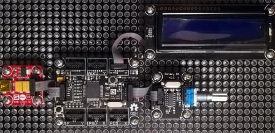

Version: 0.9.0
RotaryH1 is connected as followed on Cerberus:

| Module | Socket type | Socket on Mainboard |
|---|---|---|
| RotaryH1 | Socket Type Y | Socket 4 |
| CharacterDisplay | Socket Type Y | Socket 3 |
using System.Threading;
using Bauland.Gadgeteer;
using GHIElectronics.TinyCLR.Pins;
namespace TestRotaryH1
{
class Program
{
static void Main()
{
// Rotary connected on Socket 4 (Type Y) of FEZ Cerberus mainboard.
// CharacterDisplay connected on Socket 3 (Type Y) of FEZ Cerberus mainboard.
CharacterDisplay characterDisplay =
new CharacterDisplay(FEZCerberus.GpioPin.Socket3.Pin3,
FEZCerberus.GpioPin.Socket3.Pin4, FEZCerberus.GpioPin.Socket3.Pin5,
FEZCerberus.GpioPin.Socket3.Pin6, FEZCerberus.GpioPin.Socket3.Pin7,
FEZCerberus.GpioPin.Socket3.Pin8, FEZCerberus.GpioPin.Socket3.Pin9)
{
BacklightEnabled = true
};
characterDisplay.Clear();
RotaryH1 rotaryH1 = new RotaryH1(FEZCerberus.GpioPin.Socket4.Pin5, FEZCerberus.GpioPin.Socket4.Pin6, FEZCerberus.GpioPin.Socket4.Pin7, FEZCerberus.GpioPin.Socket4.Pin8, FEZCerberus.GpioPin.Socket4.Pin9);
rotaryH1.ResetCount();
while (true)
{
characterDisplay.CursorHome();
characterDisplay.Print("Count:" + rotaryH1.GetCount());
characterDisplay.SetCursorPosition(1,0);
characterDisplay.Print("Direction: " + ((rotaryH1.GetDirection() == RotaryH1.Direction.Clockwise) ? "CW" : "CCW"));
Thread.Sleep(200);
}
}
}
}